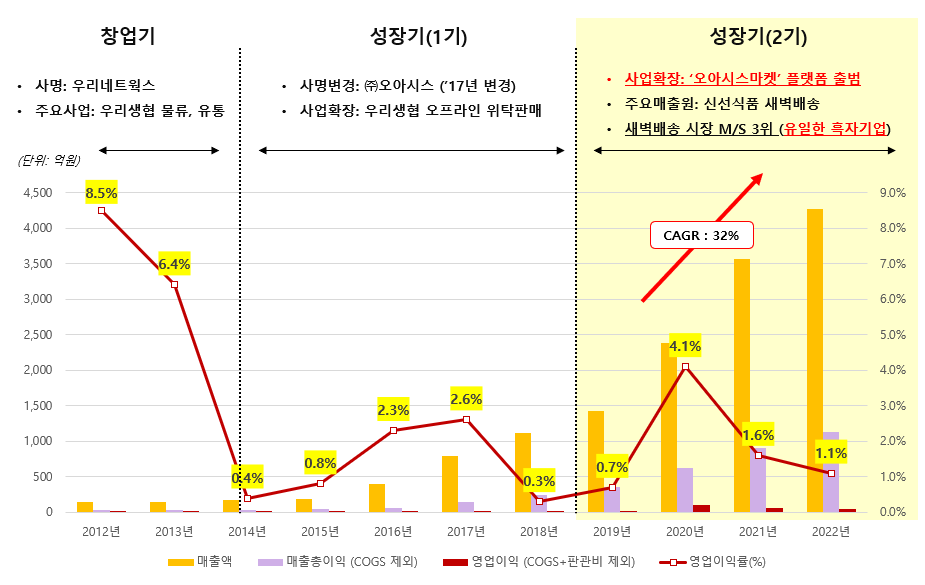
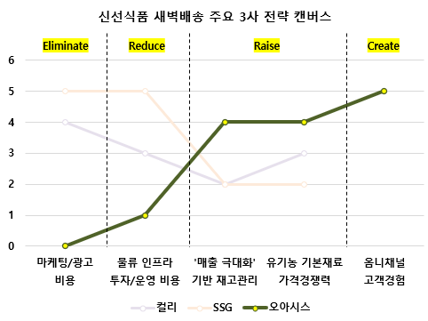
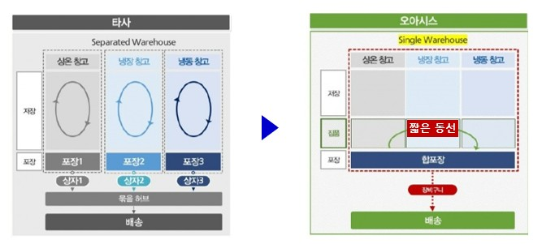
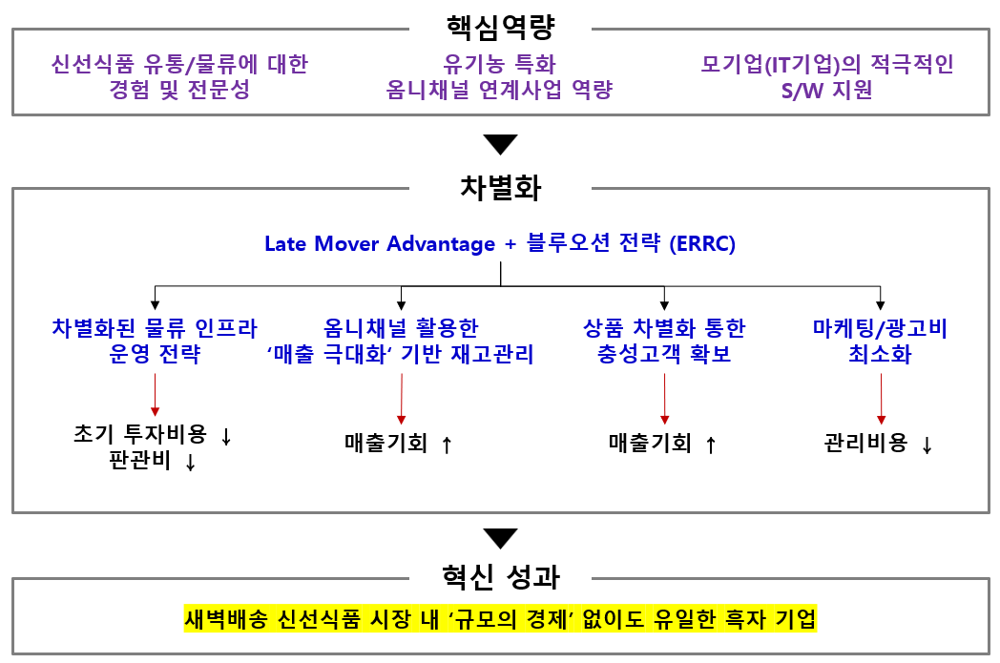

'새벽배송은 곧 적자'라는 공식이 지배하던 국내 신선식품 새벽배송 시장에서, 유기농 생협의 물류·유통 대행사로 출발한 중견기업 ㈜오아시스는 2019년 온라인 진출 첫해부터 흑자를 기록하며 시장 내 유일한 흑자 기업이 되었다. 본 사례 연구는 규모의 경제 없이도 컬리·에스에스지닷컴 등 기술과 자본으로 무장한 경쟁사들 사이에서 성과를 낸 오아시스의 핵심 역량과 차별화 전략을 블루오션 전략과 VRIO 프레임워크로 분석한다.
- 제4차 산업혁명을 맞아 기업들이 많은 도전을 받고 있으나, 이에 대응하는 혁신 성과를 도출하는 데 어려움을 겪고 있다.
- 국내에서는 '운수 및 창고' 등 일부 서비스 업종의 혁신 성과가 특히 부진하여 개선이 필요한 것으로 확인되었으며, 본 연구는 해당 업종 기업들이 벤치마킹할 수 있는 시사점을 도출하고자 한다.
- 혁신 사례로 핵심 역량과 블루오션 전략에 기반한 차별화 전략을 통해 신선식품 새벽배송 시장에 성공적으로 진입한 물류·유통기업 ㈜오아시스를 분석한다.
- 오아시스는 새벽배송 시장의 통념인 '새벽배송=적자' 공식을 깬 첫 사례로, 타 물류·유통 기업들에게 혁신 측면에서 의미 있는 통찰을 제공한다.
1. 서론
연구의 배경과 목적
과학기술정책연구원(STEPI)의 '한국기업혁신조사'에 따르면 2020~2022년 3년간 제조업 기업 중 24%, 서비스 기업 중 17%만이 혁신에 해당하는 성과를 달성한 것으로 나타났다. 특히 서비스업 내 업종별 혁신율을 살펴보면, 정보통신, 예술 및 스포츠 업종은 각각 10~16%의 혁신율을 보이는 반면, 운수 및 창고, 보건 및 복지, 금융 및 보험 업종은 2% 미만으로. 업종 간 혁신 성과에 불균형이 존재하고 있음을 알 수 있다. 본 연구는 혁신율 하위 업종인 '운수 및 창고' 분야에서 주목해야 할 혁신 사례로 ㈜오아시스를 선정하였다.
㈜오아시스는 2011년 유기농 우리생협의 물류·유통 대행 사업('우리네트웍스')으로 시작해 2017년 우리생협 오프라인 위탁판매로 영역을 확대했고, 2019년 자체 전자상거래 플랫폼 '오아시스마켓'을 런칭해 신선식품 새벽배송 시장에 진출한 지 2년 만에 시장 점유율 상위 3개사에 들었다. 인공지능 수요 예측 기술을 앞세운 ㈜컬리, 대기업 자본으로 첨단 물류센터를 구축한 ㈜에스에스지닷컴과의 경쟁에서 이룬 결과다. 무엇보다 온라인 진출 첫해인 2019년부터 영업이익 10억 원을 기록하며 '새벽배송은 적자'라는 공식을 깨트렸고, 매출이 1,423억 원(2019년)에서 4,274억 원(2022년)으로 성장하는 동안에도 적자를 기록하지 않았다.

신선식품 새벽배송 시장의 정의와 현황
국내 전자상거래 시장은 2019년 거래액 134조 원에서 코로나19에 따른 비대면 구매 확대로 2022년 약 206조 원까지 53% 성장했고, 온라인 식품 시장도 2017년 10조 원에서 2021년 31조 원으로 커졌다. 2015년 컬리(당시 더파머스)가 업계 최초로 런칭한 '샛별배송'이 변곡점이 되면서 새벽배송 시장 규모는 2019년 0.8조 원에서 2022년 8.5조 원(예상치)으로 10배 이상 성장했다.
시장 주요 플레이어를 보면 ㈜컬리는 2022년 매출 2조 원에 영업손실 2,289억 원(영업이익률 -11%), ㈜에스에스지닷컴은 매출 1.6조 원에 영업손실 1,102억 원을 기록했다. 롯데쇼핑(롯데온), ㈜비지에프, ㈜GS리테일 등 다수 기업은 콜드체인 구축을 위한 대규모 설비 투자와 주간 대비 약 1.5배 높은 야간 인건비로 적자가 지속되어 시장에서 철수했다. 이런 시장에서 오아시스만이 흑자를 유지하고 있다.
2. 이론적 배경
연구는 네 가지 이론 틀을 사용한다. 첫째, 김위찬·모보르뉴의 가치혁신(Value Innovation)과 블루오션 전략 — 비용과 고객 가치를 트레이드오프로 보지 않고 차별화와 저비용을 동시에 추구하며, 그 도구로 제거(Eliminate)·감소(Reduce)·증가(Raise)·창조(Create)를 묻는 4 Actions Framework (ERRC)와 전략 캔버스를 활용한다. 둘째, Prahalad & Hamel의 핵심역량과 Barney의 VRIO Framework (가치성·희귀성·모방 불가능성·조직 적합성)로 기업 자원의 경쟁우위 기여도를 검증한다. 셋째, Shankar 등이 제시한 후발주자의 이점(Late Mover Advantage) — 후발 기업은 선도 기업이 개척한 시장에 편승해 마케팅 비용을 절감하고, 선도 기업의 시행착오로 리스크를 줄일 수 있다. 넷째, 전환비용(Switching Cost)과 고객 락인(Lock-in) 이론이다.
3. 혁신사례 연구
오아시스마켓의 핵심역량
① 신선식품 유통/물류에 대한 경험 및 전문성. 생협 출신 경영진과 MD들이 유기농 농·수·축산물 생산자들과 현장에서 함께 성장해왔다. 약 800여 개 공급사의 70~80%가 2009년 우리생협 출범 시점 혹은 그 이전부터 최소 10년 이상 거래해온 업체들로, 경쟁사들이 더 비싸게 사가겠다고 구애해도 쉽게 넘어가지 않는다. 결제 조건을 생산자들에게 유리하게 맞춰주며 12년간 큰 잡음 없이 함께 성장해온 결과다. 상품 소싱도 깐깐하다. '무항생제'·'무농약 인증' 이상만 취급하고 MSG와 발색제 등 식품 첨가물을 허용하지 않으며, 품목을 늘리기보다 '국산 친환경 유기농'이라는 정체성을 지키는 것을 장기적 목적으로 삼는다.
② 유기농 특화 옴니채널 연계사업 역량. 기존 생협 위탁매장 운영을 기반으로 온라인으로 확장한 덕분에 오프라인과 온라인의 장점을 동시에 제공할 수 있다. 온라인 전용인 경쟁사들(컬리는 오프라인 매장이 없고, 에스에스지닷컴도 이마트와 별도 법인이라 매장이 없다)과의 큰 차별점이다.
③ 모기업(IT기업)의 적극적인 소프트웨어 지원. 모기업 지어소프트는 1998년 설립된 IT 서비스 기업으로 단말기 기술에 특화된 소프트웨어 개발 전문성을 보유한다. 25년간 기술력을 내재화한 소프트웨어 기업과 동일 창업자 구조 하에서 적극적인 IT 지원을 받는 이 특이한 구도는 경쟁사가 모방하기 어렵다. 세 역량 모두 Prahalad & Hamel 기준과 VRIO Framework 기준에서 핵심역량에 부합하는 것으로 평가됐다.
오아시스의 Late Mover Advantage와 블루오션 전략
2019년 오아시스마켓 시작 당시, 후발주자인 오아시스와 에스에스지닷컴은 컬리가 개척한 신선식품 새벽배송 시장에 별도 시장 개척 노력 없이 무임승차(Free Ride)했다. 다만 양사의 혁신 방향성은 정반대였다. 에스에스지닷컴이 막대한 자본력을 앞세워 인프라 완전 자동화 전략을 추진한 반면(높은 유지비로 2022년 12월 충청권 새벽배송을 종료하는 등 일부 한계에 직면), 오아시스는 고객 가치를 극대화하고 비용을 최소화하는 가치혁신을 택했다. ERRC 모델로 보면 불필요한 마케팅·광고 비용을 제거(Eliminate)하고, 물류 프로세스 혁신으로 새벽배송 물류비용을 절감(Reduce)했으며, 핵심 유기농 식품의 가격경쟁력을 극대화(Raise)하고, 옴니채널 사업 방식으로 새로운 고객 경험을 창조(Create)했다.

ERRC①: 차별화된 물류 인프라 운영 전략
컬리와 에스에스지닷컴은 쿠팡처럼 규모의 경제를 통한 흑자 전환을 목표로 높은 초기 비용이 수반되는 대형 물류센터(CFC) 방식을 도입했다. 반면 오아시스는 '규모의 경제' 대신 '선택과 집중'을 택해, 자동화를 최소화한 소규모 '다크스토어' 방식을 새벽배송 전용 물류센터로 재해석해 설계·운영한다. 타사 물류센터가 상온·냉장·냉동 구역별로 1차 피킹 후 고객별로 다시 묶는 작업을 거치는 것과 달리, 오아시스는 보관 공간을 구역으로 나누지 않고 피킹 직원이 한 개 장바구니에 피킹한 뒤 단일 박스에 합포장해 발송함으로써 동선과 시간을 획기적으로 줄였다.

인력 효율도 극대화했다. 통상 다크스토어 피킹 카트는 혼선 우려로 장바구니 6개 정도가 한계지만, 오아시스는 자체 제작한 카트로 최대 20개 장바구니를 싣고 다닌다. 이를 가능하게 한 것이 자체 개발한 단말기 소프트웨어 '오아시스 루트(OASiS Route)'다. 작업자가 주문확인서를 QR코드로 인식시키면 최적 피킹 동선을 내비게이션 방식으로 안내해 휴먼 에러를 없앤다. 별도 특화 단말기 없이 일반 휴대폰으로 구동되며, 모회사를 통해 필요한 기능을 수시로 저비용 개발할 수 있다. 그 결과 매출액 대비 유형 자산 비중은 경쟁사 17~39.8% 대비 6% 수준에 불과하며, 인력 투입이 많은 다크스토어 방식임에도 매출액 대비 인건비 비중은 CFC 방식 경쟁사(6.6~12.1%)와 유사하거나 더 낮다.
ERRC②: '매출 극대화' 기반 재고관리
새벽배송의 최대 딜레마는 결품 방지와 폐기율 최소화의 충돌이다. 경쟁사들은 인공지능 수요 예측으로 폐기율 1%를 목표로 하지만, 이를 위해 예상 판매량보다 5~10% 낮은 보수적 수요 예측이 불가피해 결품에 의한 매출 기회 손실이 발생한다. 오아시스는 온라인 주문을 우선 처리한 뒤 나머지 재고 전부를 오프라인 매장에 납품해 할인 판매하는 온라인-오프라인 통합 재고 관리로 이 딜레마를 풀었다. 온라인 폐기율 0%를 달성하면서 공격적 재고 확보가 가능해진 것이다. 할인 판매로 평가손실충당금은 12% 수준으로 경쟁사보다 최대 11.7%p 높지만, 산지 네트워크 기반의 낮은 납품 원가 덕분에 최종 매출 원가율은 컬리와 동일 수준이며 에스에스지닷컴보다는 오히려 낮다.
ERRC③: 상품 차별화 통한 충성고객 확보
상품 카테고리 구성만으로는 차별화가 어려운 신선식품 시장에서, 오아시스는 우유, 달걀, 채소 같은 기본 신선재료 핵심 제품의 품질과 가격 경쟁력을 최상으로 끌어올렸다. 특히, 달걀은 최상 등급인 난각 번호 1번 상품을 경쟁사보다 최대 40% 낮은 가격으로 판매하고 있다. 소셜 미디어 키워드 분석 결과, 오아시스는 기본 신선재료 관련 키워드가 많이 검색되어 '기본 신선재료 특화 판매자'라는 정체성이 고객에게 각인됐음을 보여준다. 월 거래건수는 2020년 9월 16만 건에서 2023년 8월에는 63.4만 건으로 증가하였으며, 평균 거래단가도 2023년 3월 3.9만 원에서 8월 4.1만 원으로 5% 증가하였다.
ERRC④: 마케팅/광고비 최소화
스타 마케팅에 적극적인 경쟁사들과는 달리, 오아시스는 자사의 오프라인 매장을 '매출이 발생하는 광고판'으로 활용하고 있다. 이는 별도의 추가 마케팅 비용 없이 기존 영업 활동이 곧 마케팅 효과가 되는 역발상이다. 매출액 대비 광고선전비 비중은 에스에스지닷컴와 컬리의 3~4%에 비해 0.3%에 불과하지만, 고객들은 연평균 90% 이상의 재구매율을 보이며 높은 충성도를 유지하고 있다.
4. 결론 및 한계점
오아시스는 신선식품 유통/물류 전문성, 자체 소프트웨어 개발 능력, 유기농 특화 옴니채널 역량이라는 핵심역량을 바탕으로 후발주자의 이점을 활용해 4가지 ERRC 전략을 추진했고, 그 결과 '규모의 경제' 없이도 새벽배송 시장 유일의 흑자 기업이라는 혁신 성과를 달성했다.
본 연구는 몇 가지 한계를 지니고 있다. 오아시스는 여전히 경쟁사에 비해 매출 규모가 작고, 배송 가능 지역이 제한적이기 때문에 이러한 성과를 사업 확대 과정에서도 지속할 수 있을지는 해결해야 할 과제로 남아 있다. 2022년 7월, 배송 지역 확대를 위해 경기도 의왕시에 10만 제곱미터 규모의 대형 물류센터를 건립하였고, 기존 소규모 물류센터의 운영 방식을 대폭 차용하여 현재 운영 중이다. 2023년 3분기까지는 여전히 흑자를 기록하고 있으나, 규모 확대에 따른 어려움은 불가피하므로 흑자 기조의 지속 여부를 계속 주의 깊게 살펴볼 필요가 있다. 또한 본 연구는 신선식품 새벽배송 시장에 한정된 질적 사례연구로, 업종별 혁신 수준과 혁신 장벽에 대한 양적 연구를 후속 과제로 제안한다.

- 핵심역량 파악이 최우선적으로 이루어져야 한다. Prahalad & Hamel이 제시한 세 가지 요건(고객 가치 제공, 차별화, 확대적용 가능)과 VRIO Framework의 네 가지 요건을 함께 검토하여 자사의 고유한 핵심역량을 명확히 파악한 뒤, 이를 바탕으로 차별화 전략을 모색해야 한다.
- 혁신은 1등 기업의 전유물이 아니다. 시장 점유율이 낮거나 후발주자인 경우에도 전략의 방향성이 적절하다면 성공적인 혁신을 이룰 수 있다.
- 맹목적인 기술과 인프라 투자는 최선의 방법이 아니다. 새벽배송 시장의 사례에서 보듯이, 무분별한 투자는 지속적인 적자로 이어져 사업의 지속 가능성을 저해하고 시장 철수로 이어질 수 있다. 비즈니스 모델 자체보다 오아시스가 혁신을 추진한 '방식' — 즉, 핵심역량을 정확히 인식하고 경쟁사가 따르지 않는 차별화의 길을 선택한 점 — 에 초점을 맞출 필요가 있다.
- 혁신 성과는 새로운 사업의 기초가 된다. 오아시스는 오아시스루트 상용화, 오프라인 매장 무인 자동화, 합작 회사를 통한 '온-에어 딜리버리'·'퀵 커머스' 등 다양한 확장을 시도하고 있다.